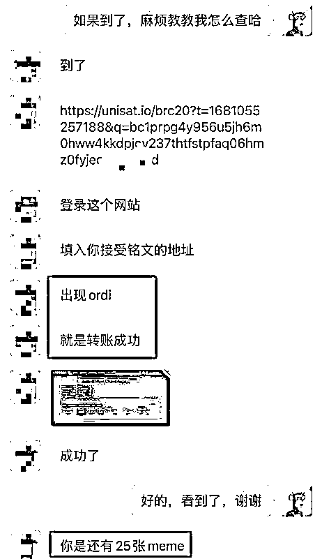
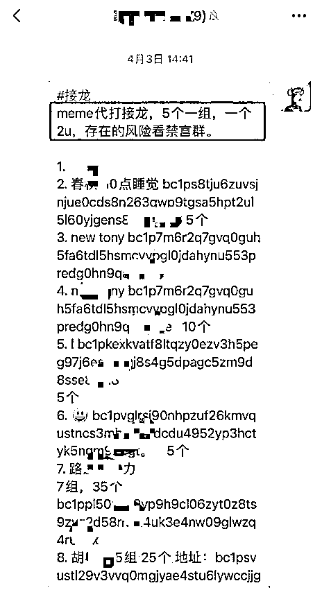
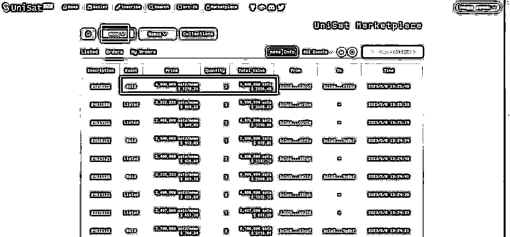
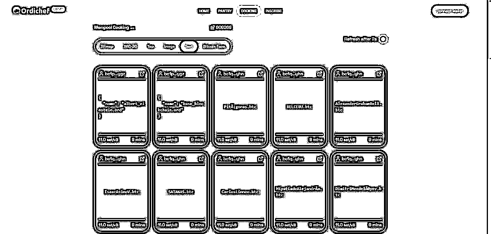
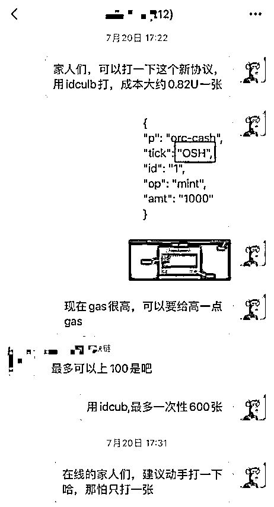
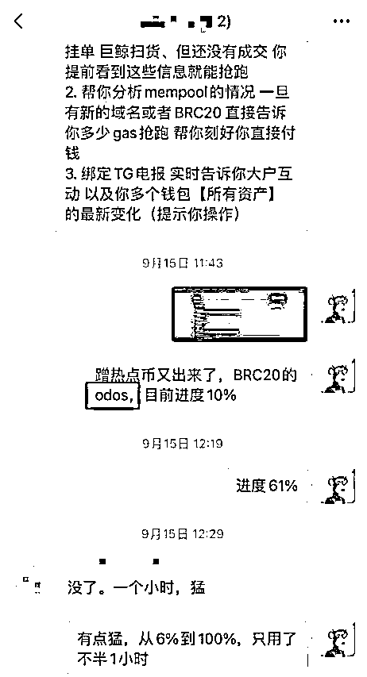
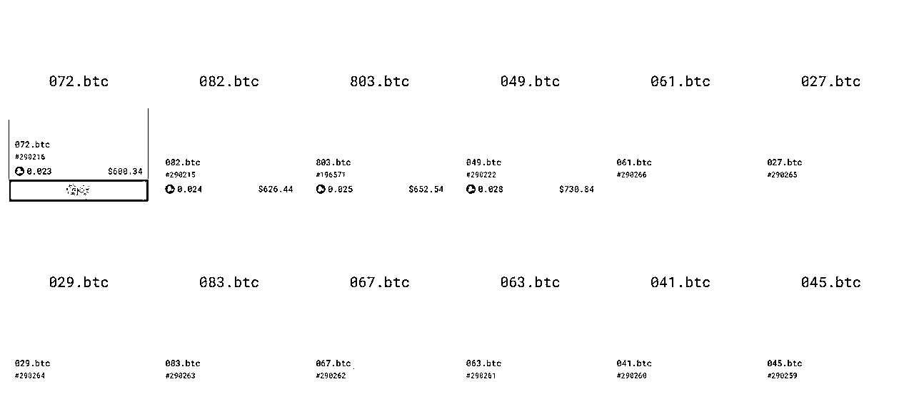
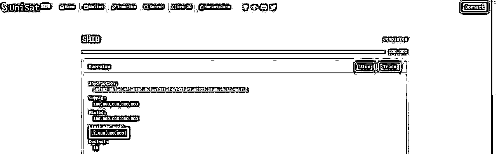
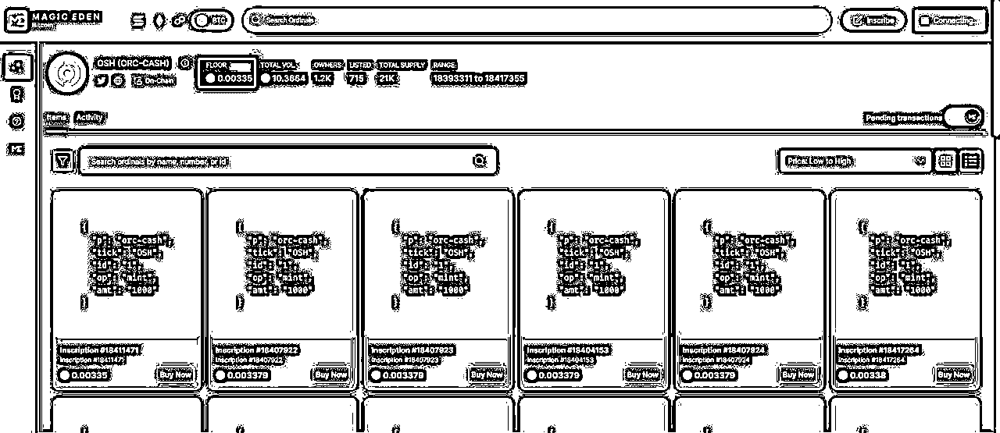
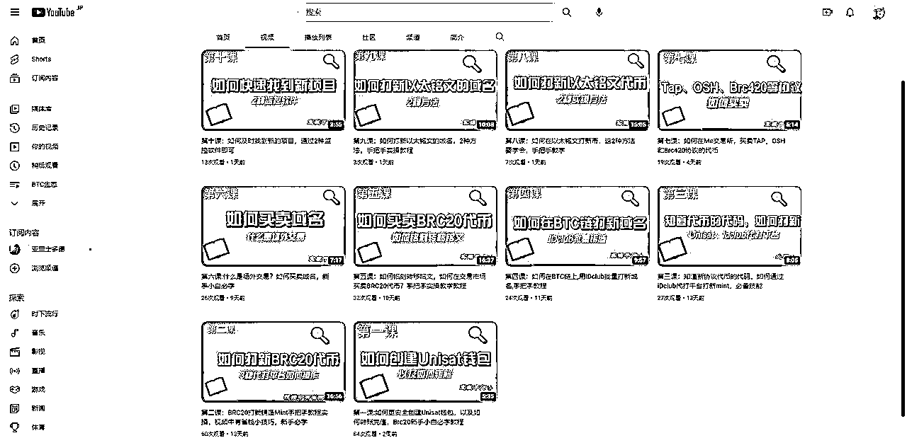

来源：https://o6u58mw1pk.feishu.cn/docx/S9dadFy5nomA5IxjIDec7c8anqh
大家好，我是清水哥，目前全职web3，星星之火社群主理人，主要研究铭文生态 ，以一级市场打新为主，带领210+社群成员进入铭文生态新领域，获得的主要成绩如下：eths最高700倍，OSH最高115倍，tab 115倍等。
接下来的内容主要围绕以下8点展开
一、我是如何接触到铭文生态BRC20 的
二、我的项目信息获取渠道有那些
三、操作上的一些策略思路
四、踩过的一些坑
五、一些经验的总结
六、当下的现状和未来的机会
七、为什么新人值得来玩新的铭文生态
八、如何进入铭文生态
一、我是如何接触到BRC20
我是2022年5月入圈，有幸能在生财有术认识了可乐哥，在此非常感恩可乐哥。在今年3月底，可乐哥说Ordinals是一个新东西，有可能是7年一遇的大机会，4月中旬，我们以2U的价格打新了BRC20的meme和Pepe，后面meme最高到1000U，pepe最高到3000U。当时在场外以75U一张的价格收Ordi，后面Ordi最高到28000U一张。至此，开始专注铭文生态深耕。



二、我的项目信息获取渠道有那些
新的赛道，意味着更多的机会，那如何提高项目的胜率呢?大白话就是怎么知道这个项目挣钱的概率高，也就是信息源的问题，目前我的信息获取渠道主要有如下4种。
A：相关生态的推特博主，比如我自己的推特@chenshuiqng1关注列表中的一些BTC生态的博主。
B：相关生态的一些付费社群，发的项目一般都是经过群主的筛选，胜率相对高。
C：各种铭文生态的共识群，这种共识群的项目需要自己进一步筛选。
D：铭文生态的OG群，一般是持有某种域名才能进入或者被群主邀请进入，比如水浒.x 108人群
E：项目监控平台：https://ordichef.xyz/cooking

三、操作上的一些策略
对于铭文生态，经常都有不同的项目，对于这些项目，我是按照如下几点策略来操作的。
A： 每隔一段时间，会出现一些新的协议，比如7月份出的ORC-CASH协议的OSH，最高115倍，8月初的TAP协议的tap,100倍，当初3月初打新Ordi就是BRC20协议的第一个代B，这些也叫头矿，头矿是一定要打的。
B:对于蹭热点B，比如9月15号BRC20r的odos，就是为了蹭Ordinals分析平台ODOS的热度，成本0.85U，最高6.8U，近8倍，一般这些情况，一级打新完后马上刻好转移铭文，有利润的情况下，可以分批出完，直至清仓。


C、对于域名，尽可能打新一些数字的域名，因为流动性相对比较好，而且位数越少越好，比如2位数的会比3位数的值钱，3位数的比4位数的更好。

四、踩过的一些坑
新的赛道，路上的坑也不少，下面是我踩过的一些坑，分享给大家
A：被埋，意思说Gas给太低，就是说手续费给的不够，钱花出去了，因为市场太Fomo(焦虑)，代B进度达到了100%，没有打新成功，白白浪费Gas手续费。针对这种情况，有2种做法，1、如果是刚刚说的头矿，Gas尽量给高一点，宁愿成本高一点，也不愿打失败2、对于一些非头矿，也就是比如蹭热点B这些，在项目的早期可以先打一点防身，如果进度越来越快，可以再次Mint打新,提高Gas去抢筹码。
B:代码写错，比如很久以前BRC20的shib代码：{"p":"brc-20","op":"mint","tick":"shib","amt":"1000000000"}
Amt后面应该是1000000000，正常是后面9个0的，有时复制代码时少了几个0
这是个很致命的错误，目前发现有几个身边的朋友出现这个错误，亏了不少钱，正确做法是直接原封不动复制项目白皮书上的代码。

五、一些经验的总结：
A：确定性的机会面前，敢于下重仓。这次盈利这么少，主要也是因为仓位太小了，不敢重仓，怕亏，身边几个挣了A7的大佬，就是在协议的第一个代B（头矿）重仓获利的，因为协议的第一个代B，往往胜率更高。
B：敢于止盈。有句话说得好，会卖才是好师傅，有一个理想的价格，及时卖出，拿到口袋的钱才是自己的，这次就是FOMO,不舍得卖，利润回撤太多了。
C：不要存在任何偏见。特别在Web3，偏见会害死人的。有些东西，如果成本不高，做了再说，或许有意想不到的回报。
D：基建搭建好，多准备几个Unisat钱包，充小额资金，随时打项目，加强执行力，有项目第一时间操作，别拖拉。新的领域，很多项目来得匆匆忙忙，有时真的来不及深入投研，只要资金量不大，可以先冲一点的。
E：操作上越有难度，越有可能大利润，比如说打新Tap协议的Tap，因为是新的协议，谁都没有操作过，而且还是用Looks代打平台，这个代打平台很少人用，操作上是一个大难点，很多人在这里被卡住了。
F：只参与一级打新，尽量不碰二级。只在一级低成本打新，在二级高价出售。二级交易是一个很难的过程，会影响心态。
六：当下的现状和未来的机会
当下整体区块圈，处于熊市，大部分标的都回撤很严重，BRC20也不例外，但是不代表没机会，比如7月份的OSH，也能跑出115倍，9月份的ARC20,也有20多倍。

很多没有接触BTC生态的人，觉得BRC20回撤太历害了，没得玩了，其实不是的，BRC20也是有不少机会的，比如就像9月15号跑出的odos就有8倍。
而且铭文除了BRC20协议，还有很多协议的，新的协议会不断出现，我们做的就是抓住新协议的第一个龙头B，打头矿，这是一个很大的机会点。
七、为什么新人值得来玩新的叙事
圈内机会很多，但是一些传统的赛道，很大可能拼的是资金和团队的动作了，像我们这种普通人，一没资金，二没团队，要想在传统的赛道，真的想挣到第一桶金比较难。
但是铭文生态这些新的赛道，相对没那么卷，传统的圈内大佬可能还看不上，所以对于新人是比较友好的。重要的是，这种很适合小资金操作，而且利润相对比较高，比如8月份我们打的-tap,成本1U左右，现在已经115U，赔率高很多的，本金小，赔率高，风险低，蓝海赛道，当然，这个卖出就看个人的了。
当然现在整体行情很差，不管是BRC20或者其他赛道，基本处于躺平状态，这个时候可以多学习学习。
八、如何进入BTC生态和以太铭文生态
目前要做的，就是熟悉各种代打平台的操作，等到项目来时，不至于手忙脚乱，导致出错。下面是我们星星之火社群的图文版教程和视频版教程，分享给大家。
图文版教程：https://www.yuque.com/dianshangqingshuige/aagovv
视频版教程：https://www.youtube.com/@ordi8899

感谢各位的观看，铭文生态是一个新的赛道，值得花时间研究研究，小资金操作，赔率高。
欢迎大家链接：ordi8899（龙珠圈友可以留微信）
以上标的不做投资建议，投资有风险，须谨慎！